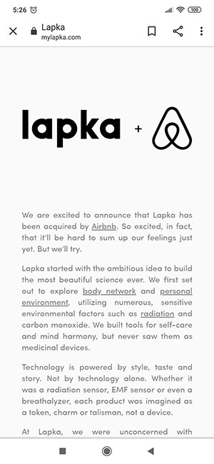

Design Principles Document
Leonardo C. Benedito
Repetition
Coca-cola
Coca-Cola.com
Repetition also gives the image order from repeated use of the same fonts, colors, layouts. This helps to orientate the viewer and also subtly show how certain ideas may be emphasized through reappearances of the same or a similar object. On the Coca-Cola website we can see the logo that is repeated several times and the colors black and red in addition to the color of the letters in white. All this helps in the perception of the user
Hick’s Law
Amazon
Amazon.com
Hick’s Law (or the Hick-Hyman Law) is named after a British and an American psychologist team of William Edmund Hick and Ray Hyman. In 1952, this pair set out to examine the relationship between the number of stimuli present and an individual’s reaction time to any given stimulus. As you would expect, the more stimuli to choose from, the longer it takes the user to make a decision on which one to interact with. Users bombarded with choices have to take time to interpret and decide, giving them work they don’t want. You can see Hick’s Law in action in the navigation of almost any website. If your menus offered direct access to every link within your site, you could quickly overwhelm the visitor. If Amazon’s menus did that, it could take several hours to scroll through a menu! Suddenly, searching for a last-minute birthday present or replacing a printer cartridge becomes a “stressfest”!
White Space and Clean Design
Lapka
www.lapka.com
Whitespace, many times referred to as negative space, is the portion of a page left unmarked, the portion that is left blank, or (as Mark would quote) the empty space in a page. In web design terms, it’s the space between graphics, columns, images, text, margins and other elements. It is the space left untouched in order to smooth things out and transform a page into something elegant. It is also the blank space that reminds us that simpler designs are beautiful and that we don’t need to create a layout filled with text and graphical elements to deliver a clear and direct message. Even though we call it white space, it doesn’t mean the actual space must be white. The blank space may be filled with any color as long as it is free of any elements like text or images. Whitespace is also associated with elegance and sophistication since it is a way to organize text, organize elements and guide users attention to certain elements. The Lapka website. Their website commands attention through its simple and clear design. Their site’s layout shows that you can get a nice result by tastefully positioning elements while leaving blank space between them.